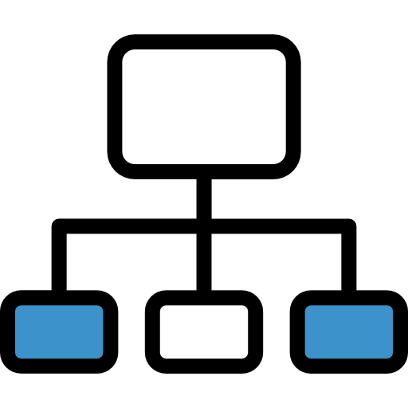
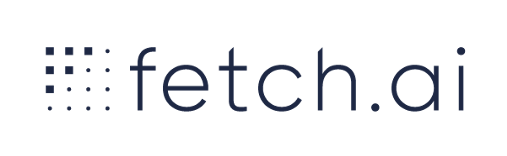
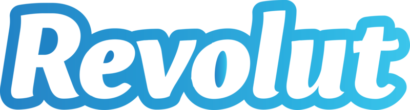
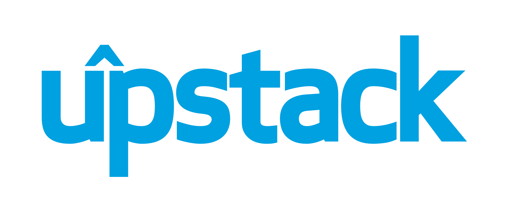

I'm a professional software developer focused on backend and data processing solutions built using Python!
Looking for new opportunities: a place I can apply all my skills, learn something new and bring great value to a project.
Excellent knowledge of python, strong Linux experience and a superb understanding of networking makes me a nice person
can start your project from scratch, join already started project, improve and optimize solutions.
Just give me a call if you are looking for an expert to design, analyze and implement your great idea!
Yuri Turchenkov
Moving tech forward!
email:
solarw.mail@gmail.com
current location: Kirov, Russia, UTC+3
RU: +79615681042
UK: +447519758140
UK: +447519758140
About me
Who I am and what I'm looking for
Primary skills
What I'm really good in

python

linux
networking

concurrency
Experienced in
Technologies short list
python 2/3,
asyncio,
flask,
postgresql,
rabbitmq,
django,
docker/docker-compose,
celery,
mysql,
tornado,
mongodb,
redis,
nginx,
git,
shell scripting,
and more!
Some of work history
Proven experience

agents framework
Worktime: starting april 2020
Tech stack: python3.8, asyncio
Role: senior python developer
Details: Working on agent framework core
Refactoring to asyncio, bugfixes, tests improvements.
Found and fixed many issues with performance, stability, bad asynchronous compatability. Created extra tools for testing code. Moved a lot of code to asyncio design.

internal service (HR related)
Worktime: 4 months
Tech stack: python3.7, django2, django rest framework3, celery4, postgres10
Role: senior python developer
Details: Joined to ready established project. Brought a lot of improvements and new approaches to backend codebase and infrastructure
Improvements and decrease code redundancy over the project during refactoring. Increased code stability. Great test coverage.
Created test server deployment for frontend testing. Implemented additional migration system to apply data migrations individually.

streaming service
Worktime: 5 months
Tech stack: python3.7, flask, asyncio, rabbitmq, postgresql10, redis
Role: senior python developer
Details: Joined in a just created team of experts to migrate service backend from monolitic and outdated architecure to microservices.
I solved task on architecture of the project, microservices intercommunication using json rest api, rabbitmq and postgre.
Implemented efficient pubsub exchange on rabbitmq for websockets notifications across various services.
Implemented 4 microservices. Helped a lot with devops settings for api gateway.
cryptocurrency exchange
Worktime: 1.5 years
Tech stack: python3.6, django2, celery4, postgresql10, rabbitmq, redis
Role: lead backend developer
Details: Started this project, designed architecture, integrations, db structure and more.
Implemented full backend solution: rest api, order books processing, paygates integration, cryptocoins integrations.
It supports: 3 fiat paygates, about 8 cryptocoins, internal rest api, integration api for partners, bots.
Made this project alive and really proud of it!
social media archiving platform
Worktime: 1.5 years
Tech stack: python2.7, tornado, cassandra, mongodb2, rabbitmq
Role: senior python backend developer
Details: Social media data processing platform build on top of Tornado. Joined team right before the start development of the new version.
The new solution was built using microservice architecture using rabbitmq and Cassandra as primary data storage.
orked on various services, especially on interaction with social media networks and data normalization,
Developed service for digital documents signing. rest api implemented as well.
online ads exchange and bidding platform
Worktime: 6 months
Tech stack: python2.7, django1, mysql5, vertica, celery, rabbitmq, redis, lua
Role: senior python backend developer
Details: Built on top of Django. I joined the team when service was already in production and my main role
was enhancing administrator console functionality on backend side.
I got strong OOP experience, including metaclasses and constructing types on the fly.
Learned some concepts of ad exchange internals.
Was acquired by CrossRider and unfortuanlly ads department was closed.
social media aggregation startup
Worktime: 3 years
Tech stack: python2.7, django1, mysql4, celery, rabbitmq, redis
Role: senior python developer with js skills
Details: Rebelmouse.com built on top of Django.
I joined in the beginning of development and actively worked to bring it to production.
This is the first experience of work with a big global team.
The main achievement - developed from scratch statistics functionality:
gather, transform, store, visualize to users.
Worked on social auth support for mobile application and REST backend endpoints.

best freelance platform
Worktime: 7 years
Tech stack: django1, flask, pyqt, mysql, mongodb and more
Role: freelancer for various projects
Details: In 7 years, I’ve been working on Upwork as python developer,
I’ve worked with 22 clients and completed 27 projects.
I worked as a team member or as independed standalone developer.
Various tasks - great experience!
Special interests
What I dig after hours
Asyncio
MongoDB (nice storage), QT (best crossplatform GUI toolkit ever),
SSH(protocol you always use)
I have a pet project: RPC framework for microservice architecture, like gRPC,
but without type definitions, peer-to-peer concept, secure, python3 oriented.
Developed on top of asyncio and ssh protocol specifications.
Got a working prototype with pyqt ui support, networking, simple storage
and even full js support to write services right in js.
Details
questions and answers
What about Python?
Strong experiense with famous python frameworks: Django, Tornado, Flask Asyncio, threads, multiprocessing as special interest. Some desktop experience: PyQT Python extending with ctypes and extensions in swig or cython
What about Web?
Most of the projects I worked on are backend projects. I have strong knowledges how WWW and network work (browsers, servers, protocols, and so on) Familiar with JS, but I'm a python developer, so backend is my passion!
What about Linux?
I'm everyday Linux user for more than 12 years, so I really know what Linux is. Strong experience in configuring servers for various usages, scripting, automation. Linux is like my second home)
SQL experience?
Worked mostly with Postgres with django orm, sqlalchemy. Have worked with complicated joins, nested queries, partitioning.
NOSQL skills?
MongoDB, really love it. Worked a lot with Redis.
Languages I speak
Russian, English (IELTS overal score: 6)
Remote? Relocation?
Will check any variant in details! UK/EU/US work permit assistance is required!
Mentorship?
I was asked to run personal classes for C++ developer about python. Main topics were: python and limitation for CPU bound tasks, parallel programming, MPI, python speedup with c/c++ modules. Classes were 3-4 hours long for 5 days in a row. At the end of the course there was a practical project with the appliance of all technologies studied: build a simple CPU bound python app, then distributed it with MPI and speedup with swig/ctypes/cython. Developer studied everything and confirmed knowledge with a finished test task.
Any management experience?
I worked as a project manager on Digital Signage project. I created a team of 3 developers I managed. I communicated the customer directly. The project was frozen after 2 months of development, cause investment issues. The first presentation of the prototype (mobile app, admin console) was successful and was approved by customer and investor, but investor decided to stop funding the project by own reason and customer did not find another funding source. The project was started well and I regret it was not completed.
Strong experiense with famous python frameworks: Django, Tornado, Flask Asyncio, threads, multiprocessing as special interest. Some desktop experience: PyQT Python extending with ctypes and extensions in swig or cython
What about Web?
Most of the projects I worked on are backend projects. I have strong knowledges how WWW and network work (browsers, servers, protocols, and so on) Familiar with JS, but I'm a python developer, so backend is my passion!
What about Linux?
I'm everyday Linux user for more than 12 years, so I really know what Linux is. Strong experience in configuring servers for various usages, scripting, automation. Linux is like my second home)
SQL experience?
Worked mostly with Postgres with django orm, sqlalchemy. Have worked with complicated joins, nested queries, partitioning.
NOSQL skills?
MongoDB, really love it. Worked a lot with Redis.
Languages I speak
Russian, English (IELTS overal score: 6)
Remote? Relocation?
Will check any variant in details! UK/EU/US work permit assistance is required!
Mentorship?
I was asked to run personal classes for C++ developer about python. Main topics were: python and limitation for CPU bound tasks, parallel programming, MPI, python speedup with c/c++ modules. Classes were 3-4 hours long for 5 days in a row. At the end of the course there was a practical project with the appliance of all technologies studied: build a simple CPU bound python app, then distributed it with MPI and speedup with swig/ctypes/cython. Developer studied everything and confirmed knowledge with a finished test task.
Any management experience?
I worked as a project manager on Digital Signage project. I created a team of 3 developers I managed. I communicated the customer directly. The project was frozen after 2 months of development, cause investment issues. The first presentation of the prototype (mobile app, admin console) was successful and was approved by customer and investor, but investor decided to stop funding the project by own reason and customer did not find another funding source. The project was started well and I regret it was not completed.
Contact me now! solarw.mail@gmail.com
Set a meeting with me using calendy!
Updated: 25.03.2022. Check the latest version on http://solarw.info
Generated using python!